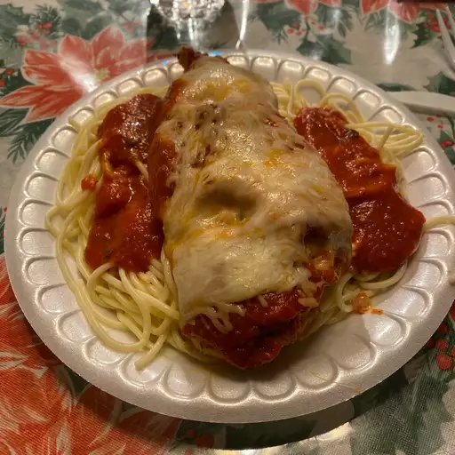

Stuffed Chicken Breast

Description
This stuffed chicken breast recipe features the creamiest and most
delicious cheese and spinach filling enveloped in perfectly cooked
meat. Its fast to cook and easy to customize!
Ingredients
- 1 ½ cups shredded Italian cheese blend (Optional)
- 1 clove garlic, finely chopped
- 1 teaspoon dried basil
- 1 teaspoon dried oregano
- ½ cup grated Parmesan cheese
- ½ cup Italian-seasoned bread crumbs
- 4 boneless, skinless chicken breasts
- 1 egg, well beaten
- 1 cup spaghetti sauce
- ¼ cup shredded Italian cheese blend, or to taste (Optional)
Steps
- Preheat oven to 350 degrees F (175 degrees C).
-
Combine 1 1/2 cup Italian cheese blend, garlic, basil, and
oregano in a bowl.
-
Cut one side of each chicken breast through the middle
horizontally to within one-half inch of the other side. Open the
two sides and spread them out like an open book. Lightly pound
chicken to flatten. Fill each chicken breast with Italian cheese
blend mixture and close like a book over the filling. Coat the
outside of each chicken breast with egg; press bread crumb
mixture over egg layer to coat each chicken breast. Arrange
chicken breasts in a 9x13-inch baking dish.
-
Bake in the preheated oven until chicken is no longer pink in
the center and the juices run clear, about 45 minutes. An
instant-read thermometer inserted into the center should read at
least 165 degrees F (74 degrees C). Pour spaghetti sauce over
cooked chicken; top with 1/4 cup Italian cheese blend. Bake
until sauce is bubbling and cheese is melted, about 5 more
minutes.